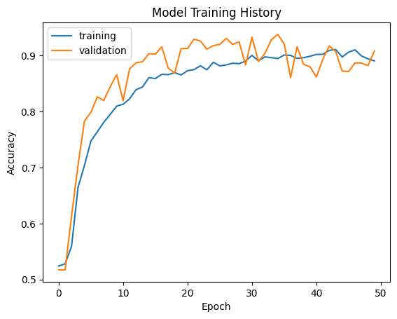
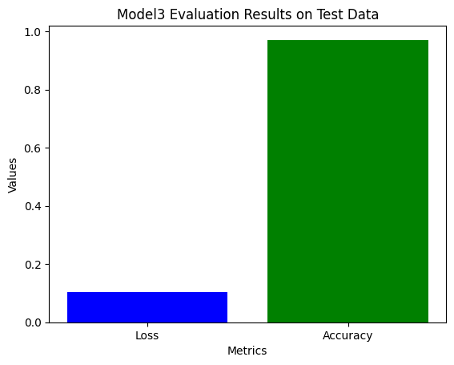

The rapid spread of fake news, fueled by the internet and unvetted content sharing on digital platforms, has emerged as a significant global concern. In this case, analyzing fake news serves as a crucial defense mechanism. In today’s tutorial, we are going to learn how to develop and assess a fake news classifier using Keras.
Data Source: Our data for this tutorial is from this article
Ahmed H, Traore I, Saad S. (2017) “Detection of Online Fake News Using N-Gram Analysis and Machine Learning Techniques. In: Traore I., Woungang I., Awad A. (eds) Intelligent, Secure, and Dependable Systems in Distributed and Cloud Environments. ISDDC 2017. Lecture Notes in Computer Science, vol 10618. Springer, Cham (pp. 127-138).
Instruction
1. Acquire Training Data
The dataset we plan to use hosted a training data set at the below URL. train_url = “https://github.com/PhilChodrow/PIC16b/blob/master/datasets/fake_news_train.csv?raw=true”. We can read it into Python directly, or you can choose to download it to your computer
!pip install keras --upgrade
Requirement already satisfied: keras in /usr/local/lib/python3.10/dist-packages (2.15.0)
Collecting keras
Downloading keras-3.1.0-py3-none-any.whl (1.1 MB)
━━━━━━━━━━━━━━━━━━━━━━━━━━━━━━━━━━━━━━━━ 1.1/1.1 MB 11.7 MB/s eta 0:00:00
Requirement already satisfied: absl-py in /usr/local/lib/python3.10/dist-packages (from keras) (1.4.0)
Requirement already satisfied: numpy in /usr/local/lib/python3.10/dist-packages (from keras) (1.25.2)
Requirement already satisfied: rich in /usr/local/lib/python3.10/dist-packages (from keras) (13.7.1)
Collecting namex (from keras)
Downloading namex-0.0.7-py3-none-any.whl (5.8 kB)
Requirement already satisfied: h5py in /usr/local/lib/python3.10/dist-packages (from keras) (3.9.0)
Collecting optree (from keras)
Downloading optree-0.10.0-cp310-cp310-manylinux_2_17_x86_64.manylinux2014_x86_64.whl (286 kB)
━━━━━━━━━━━━━━━━━━━━━━━━━━━━━━━━━━━━━━━━ 286.8/286.8 kB 22.3 MB/s eta 0:00:00
Requirement already satisfied: ml-dtypes in /usr/local/lib/python3.10/dist-packages (from keras) (0.2.0)
Requirement already satisfied: typing-extensions>=4.0.0 in /usr/local/lib/python3.10/dist-packages (from optree->keras) (4.10.0)
Requirement already satisfied: markdown-it-py>=2.2.0 in /usr/local/lib/python3.10/dist-packages (from rich->keras) (3.0.0)
Requirement already satisfied: pygments<3.0.0,>=2.13.0 in /usr/local/lib/python3.10/dist-packages (from rich->keras) (2.16.1)
Requirement already satisfied: mdurl~=0.1 in /usr/local/lib/python3.10/dist-packages (from markdown-it-py>=2.2.0->rich->keras) (0.1.2)
Installing collected packages: namex, optree, keras
Attempting uninstall: keras
Found existing installation: keras 2.15.0
Uninstalling keras-2.15.0:
Successfully uninstalled keras-2.15.0
ERROR: pip's dependency resolver does not currently take into account all the packages that are installed. This behaviour is the source of the following dependency conflicts.
tensorflow 2.15.0 requires keras<2.16,>=2.15.0, but you have keras 3.1.0 which is incompatible.
Successfully installed keras-3.1.0 namex-0.0.7 optree-0.10.0
#import libraries:import numpy as npimport pandas as pdimport tensorflow as tfimport tensorflow_datasets as tfdsfrom sklearn.model_selection import train_test_splitfrom sklearn.feature_extraction.text import ENGLISH_STOP_WORDSimport nltkfrom nltk.corpus import stopwords# import tensorflow as tfimport reimport stringimport kerasfrom keras import layers, lossesfrom keras.layers import TextVectorizationfrom sklearn.model_selection import train_test_splitfrom sklearn.preprocessing import LabelEncoder# for embedding vizimport plotly.express as pximport plotly.io as piopio.templates.default ="plotly_white"import reimport stringimport tensorflow as tffrom tensorflow.keras import layers, Model, lossesfrom tensorflow.keras.layers import Inputimport matplotlib.pyplot as pltimport warningsimport sys
# Download NLTK stopwordsnltk.download('stopwords')# NLTK stopwords (we need english version)nltk_stopwords =set(stopwords.words('english'))#Step 1: Acquire Training Datadef acquire_training_data(url): data = pd.read_csv(url)return datatrain_url ="https://github.com/PhilChodrow/PIC16b/blob/master/datasets/fake_news_train.csv?raw=true"#Acquire the training datatraining_data = acquire_training_data(train_url)# training_data = pd.read_csv("./fake_news_train.csv")training_data.head()
[nltk_data] Downloading package stopwords to /root/nltk_data...
[nltk_data] Unzipping corpora/stopwords.zip.
Unnamed: 0
title
text
fake
0
17366
Merkel: Strong result for Austria's FPO 'big c...
German Chancellor Angela Merkel said on Monday...
0
1
5634
Trump says Pence will lead voter fraud panel
WEST PALM BEACH, Fla.President Donald Trump sa...
0
2
17487
JUST IN: SUSPECTED LEAKER and “Close Confidant...
On December 5, 2017, Circa s Sara Carter warne...
1
3
12217
Thyssenkrupp has offered help to Argentina ove...
Germany s Thyssenkrupp, has offered assistance...
0
4
5535
Trump say appeals court decision on travel ban...
President Donald Trump on Thursday called the ...
0
2. Make a Dataset
We now will write a function “make_dataset”, which - 1. Change the text to lowercase. - 2. Remove stopwords from the article text and title. - 3. Construct and return a tf.data.Dataset with two inputs and one output. The input should be of the form (title,text) ,and the output should consist only of the fake column.
Since batch can greatly increase the speeding of traning, we will also need to batch our dataset prior to returning it using “my_data_set.batch(100)”.
import tensorflow as tfimport nltkfrom nltk.corpus import stopwordsimport string# Download NLTK stopwordsnltk.download('stopwords')# Function to create the dataset# makde_dataset is implemented as a function, and used to create both the training/validation and testing data setsdef make_dataset(data):# Function to preprocess textdef preprocess_text(text):# Convert text to lowercase text = text.lower()# Remove punctuation text = text.translate(str.maketrans('', '', string.punctuation))# Remove stopwords using NLTK stopwords_nltk =set(stopwords.words('english')) words = text.split() text =' '.join([word for word in words if word notin stopwords_nltk])# Remove dash "–" this step is not required but necessary later.# We want the most frequent words to be meaningful and indicative# So we need to remove "-" text = text.replace('–', '')return text# Apply preprocessing to title and text columns data['title'] = data['title'].apply(preprocess_text) data['text'] = data['text'].apply(preprocess_text)# Create tf.data.Dataset dataset = tf.data.Dataset.from_tensor_slices(( {"title": data['title'], "text": data['text']}, # Inputs data['fake'] # Output ))#Here we make sure that the constructed Dataset has multiple inputs# Batch the dataset dataset = dataset.batch(100)return dataset# Example usage:# Assuming train_data is your training DataFrame loaded from the CSV filetrain_dataset = make_dataset(training_data)train_data=train_dataset# Example of iterating through the datasetfor inputs, output in train_dataset.take(1):print("Title:", inputs['title'][0].numpy())print("Text:", inputs['text'][0].numpy())print("Fake:", output[0].numpy())
[nltk_data] Downloading package stopwords to /root/nltk_data...
[nltk_data] Package stopwords is already up-to-date!
Title: b'merkel strong result austrias fpo big challenge parties'
Text: b'german chancellor angela merkel said monday strong showing austria antiimmigrant freedom party fpo sunday election big challenge parties speaking news conference berlin merkel added hoping close cooperation austria conservative election winner sebastian kurz european level'
Fake: 0
Validation Data
Now we have constructed our primary Dataset. We split 20% of it to use for validation. Then determining a base rate is also an important step. We will determine the base rate for this data set by examining the labels on the training set.
def split_train_val_dataset(dataset, val_ratio=0.2): #the ratio fo validation set, we set 0.2 (20%)# Determine sizes of train, val val_size =int(val_ratio *len(dataset))# Split dataset into train, validation train_dataset = dataset.skip(val_size) val_dataset = dataset.take(val_size)return train_dataset, val_dataset# Split the training and validation data sets using a functiontrain_data, val_data= split_train_val_dataset(train_data, val_ratio=0.2)train=train_dataval=val_datatest_url="https://raw.githubusercontent.com/PhilChodrow/PIC16B/master/datasets/fake_news_test.csv"test_dataset = acquire_training_data(test_url)# test_dataset = pd.read_csv("./fake_news_test.csv")test_data = make_dataset(test_dataset)# Step 5: Calculate base ratedef calculate_base_rate(data):# Count the number of fake news and real news articles num_fake =sum(data['fake']) num_real =len(data) - num_fake# Calculate the proportion of fake news articles in the dataset fake_proportion = num_fake /len(data)# For the Base Rate for the data set：# The base rate represents the proportion of fake news articles in the dataset.# It provides a baseline for evaluating the performance of the fake news detection model.# A higher base rate indicates a larger proportion of fake news articles in the dataset.# The model's performance should be assessed relative to this base rate. base_rate = fake_proportionreturn base_rate, num_fake, num_realbase_rate, num_fake, num_real = calculate_base_rate(training_data)print("Base rate:", base_rate)print("Number of fake news articles:", num_fake)print("Number of real news articles:", num_real)
Base rate: 0.522963160942581
Number of fake news articles: 11740
Number of real news articles: 10709
The base rate of 0.5229 indicates that approximately 52.3% of the articles in the dataset are labeled as fake news. This means that if we were to randomly guess the label of an article without using any model or additional information, we would have a 52.3% chance of correctly identifying it as fake news.
In the next step, we import the re module for regular expressions: we define the vocabulary size as 2000. Then, we create a standardization function to preprocess the text by converting it to lowercase and removing punctuation using regular expressions. We can then create a TextVectorization layer called title_vectorize_layer. We configure it with the standardization function, vocabulary size, output mode as integers, and output sequence length of 500.
Finally, we adapt the title_vectorize_layer to the training data by extracting the “title” field from the dataset using train_data.map(lambda x, y: x[“title”]). This process creates a TextVectorization layer that can transform text titles into fixed-length integer sequences, ready to be used in a neural network model.
# %pip install pydot
Defaulting to user installation because normal site-packages is not writeable
Looking in indexes: https://pypi.tuna.tsinghua.edu.cn/simple
Requirement already satisfied: pydot in c:\users\fx506\appdata\roaming\python\python311\site-packages (2.0.0)
Requirement already satisfied: pyparsing>=3 in e:\anaconda\anaconda3\lib\site-packages (from pydot) (3.0.9)
Note: you may need to restart the kernel to use updated packages.
# %pip install graphviz
Defaulting to user installation because normal site-packages is not writeable
Looking in indexes: https://pypi.tuna.tsinghua.edu.cn/simple
Requirement already satisfied: graphviz in c:\users\fx506\appdata\roaming\python\python311\site-packages (0.20.1)
Note: you may need to restart the kernel to use updated packages.
import re%time# Define the size of the vocabularysize_vocabulary =2000# Define the standardization functiondef standardization(input_data):# Convert text to lowercase lowercase = tf.strings.lower(input_data)# Remove punctuation using regular expression no_punctuation = tf.strings.regex_replace(lowercase, '[%s]'% re.escape(string.punctuation), '')return no_punctuation# Create a TextVectorization layertitle_vectorize_layer = tf.keras.layers.TextVectorization( standardize=standardization, max_tokens=size_vocabulary, # only consider this many words output_mode='int', output_sequence_length=500)# Adapt the TextVectorization layer to the training datatitle_vectorize_layer.adapt(train_data.map(lambda x, y: x["title"]))
CPU times: user 3 µs, sys: 1e+03 ns, total: 4 µs
Wall time: 7.39 µs
%time#As for Text Vectoriazation, there is one option of code:"""preparing a text vectorization layer for tf modelsize_vocabulary = 2000def standardization(input_data): lowercase = tf.strings.lower(input_data) no_punctuation = tf.strings.regex_replace(lowercase, '[%s]' % re.escape(string.punctuation),'') return no_punctuationtitle_vectorize_layer = TextVectorization( standardize=standardization, max_tokens=size_vocabulary, # only consider this many words output_mode='int', output_sequence_length=500)title_vectorize_layer.adapt(train.map(lambda x, y: x["title"]))"""
CPU times: user 4 µs, sys: 0 ns, total: 4 µs
Wall time: 7.87 µs
'\npreparing a text vectorization layer for tf model\nsize_vocabulary = 2000\n\ndef standardization(input_data):\n lowercase = tf.strings.lower(input_data)\n no_punctuation = tf.strings.regex_replace(lowercase,\n \'[%s]\' % re.escape(string.punctuation),\'\')\n return no_punctuation \n\ntitle_vectorize_layer = TextVectorization(\n standardize=standardization,\n max_tokens=size_vocabulary, # only consider this many words\n output_mode=\'int\',\n output_sequence_length=500) \n\ntitle_vectorize_layer.adapt(train.map(lambda x, y: x["title"]))'
3. Create Models
Now we are ready to use Keras models to offer a perspective on the following question: “When detecting fake news, is it most effective to focus on only the title of the article, the full text of the article, or both?” To offer effective analysis, we need to create following three models:
Model
Input
Model 1
Only the article title as an input
Model 2
Only the article text as an input
Model 3
Both the article title and the article text as input
# # Define size of vocabulary# size_vocabulary = 2000# # Define standardization function for preprocessing# def standardization(input_data):# lowercase = tf.strings.lower(input_data)# no_punctuation = tf.strings.regex_replace(lowercase, '[%s]' % re.escape(string.punctuation), '')# return no_punctuation# # Define text vectorization layer for title# title_vectorize_layer = TextVectorization(standardize=standardization,# max_tokens=size_vocabulary,# output_mode='int',# output_sequence_length=500)# # Define text vectorization layer for text# text_vectorize_layer = TextVectorization(standardize=standardization,# max_tokens=size_vocabulary,# output_mode='int',# output_sequence_length=500)# # Adapt text vectorization layers to the training data# train_titles = train_data.map(lambda x, y: x["title"])# train_text = train_data.map(lambda x, y: x["text"])# title_vectorize_layer.adapt(train_titles)# text_vectorize_layer.adapt(train_text)# # Function to train and plot the history of a model# def train_and_plot_history(model, train_data, val_data, epochs=50):# try:# history = model.fit(train_data, validation_data=val_data, epochs=epochs, verbose=False)# plt.plot(history.history["accuracy"], label="training")# plt.plot(history.history["val_accuracy"], label="validation")# plt.xlabel("Epoch")# plt.ylabel("Accuracy")# plt.title(f'Model Training History')# plt.legend()# plt.show()# except KeyboardInterrupt:# print("Training interrupted. Exiting gracefully.")# sys.exit()# # Define and compile title model# def create_title_model():# # Input layer# title_input = tf.keras.Input(shape=(1,), dtype=tf.string, name="title")# # Define inputs for title model (Model 1)# # Apply the title_vectorize_layer to the titles_input# title_features = title_vectorize_layer(titles_input)# # Embedding layer# title_features = layers.Embedding(size_vocabulary, output_dim=3, name="embedding_title")(title_features)# # Apply Dropout regularization to the embedded title features to reduce overfitting# title_features = layers.Dropout(0.2)(title_features)# # Reduce the spatial dimensions and obtain a fixed-length vector# title_features = layers.GlobalAveragePooling1D()(title_features)# # Apply another Dropout regularization to the pooled title features# title_features = layers.Dropout(0.2)(title_features)# # Add a Dense layer with 32 units and ReLU activation for further feature transformation# title_features = layers.Dense(32, activation='relu')(title_features)# # Add the final output layer with 2 units (assuming binary classification)# output = layers.Dense(2, activation='sigmoid',name="fake")(title_features)# model = tf.keras.Model(inputs=titles_input, outputs=output)# model.compile(optimizer="adam", loss=losses.SparseCategoricalCrossentropy(from_logits=True), metrics=["accuracy"])# return model# # Define and compile text model# def create_text_model():# title_input = tf.keras.Input(shape=(1,), dtype=tf.string, name="text")# # text_input = Input(shape=(1,), name="text",dtype="string")# text_features = text_vectorize_layer(text_input)# text_features = layers.Embedding(size_vocabulary, output_dim=7, name="embedding_text")(text_features)# text_features = layers.Dropout(0.2)(text_features)# text_features = layers.GlobalAveragePooling1D()(text_features)# text_features = layers.Dropout(0.2)(text_features)# text_features = layers.Dense(32, activation='relu')(text_features)# output = layers.Dense(2, activation='sigmoid', name="fake")(text_features)# model =tf.keras.Model(inputs=text_input, outputs=output)# model.compile(optimizer="adam", loss=losses.SparseCategoricalCrossentropy(from_logits=True), metrics=["accuracy"])# return model# # Define and compile combined model# def create_combined_model():# titles_input = tf.keras.Input(shape=(1,), name="title", dtype="string")# text_input = tf.keras.Input(shape=(1,), name="text", dtype="string")# title_features = title_vectorize_layer(titles_input)# text_features = text_vectorize_layer(text_input)# title_features = layers.Embedding(size_vocabulary, output_dim=3, name="embedding_title")(title_features)# text_features = layers.Embedding(size_vocabulary, output_dim=7, name="embedding_text")(text_features)# title_features = layers.Dropout(0.2)(title_features)# text_features = layers.Dropout(0.2)(text_features)# title_features = layers.GlobalAveragePooling1D()(title_features)# text_features = layers.GlobalAveragePooling1D()(text_features)# title_features = layers.Dense(32, activation='relu')(title_features)# text_features = layers.Dense(32, activation='relu')(text_features)# main = layers.concatenate([title_features, text_features], axis=1)# output = layers.Dense(2, name="fake")(main)# model = tf.keras.Model(inputs=[titles_input, text_input], outputs=output)# model.compile(optimizer="adam", loss=losses.SparseCategoricalCrossentropy(from_logits=True), metrics=["accuracy"])# return model
# Define and compile title modeldef create_title_model():# Input layer title_input = tf.keras.Input(shape=(1,), dtype=tf.string, name="title")# Apply the title_vectorize_layer to the title_input title_features = title_vectorize_layer(title_input)# Embedding layer title_features = layers.Embedding(size_vocabulary, output_dim=3, name="embedding_title")(title_features)# Apply Dropout regularization to the embedded title features to reduce overfitting title_features = layers.Dropout(0.2)(title_features)# Reduce the spatial dimensions and obtain a fixed-length vector title_features = layers.GlobalAveragePooling1D()(title_features)# Apply another Dropout regularization to the pooled title features title_features = layers.Dropout(0.2)(title_features)# Add a Dense layer with 32 units and ReLU activation for further feature transformation title_features = layers.Dense(32, activation='relu')(title_features)# Add the final output layer with 2 units (assuming binary classification) output = layers.Dense(2, activation='sigmoid',name="fake")(title_features) model = tf.keras.Model(inputs=title_input, outputs=output) model.compile(optimizer="adam", loss=losses.SparseCategoricalCrossentropy(from_logits=True), metrics=["accuracy"])return model# Define and compile text modeldef create_text_model(): text_input = tf.keras.Input(shape=(1,), dtype=tf.string, name="text") # 将 title_input 改为 text_input text_features = text_vectorize_layer(text_input) text_features = layers.Embedding(size_vocabulary, output_dim=7, name="embedding_text")(text_features) text_features = layers.Dropout(0.2)(text_features) text_features = layers.GlobalAveragePooling1D()(text_features) text_features = layers.Dropout(0.2)(text_features) text_features = layers.Dense(32, activation='relu')(text_features) output = layers.Dense(2, activation='sigmoid', name="fake")(text_features) model = tf.keras.Model(inputs=text_input, outputs=output) model.compile(optimizer="adam", loss=losses.SparseCategoricalCrossentropy(from_logits=True), metrics=["accuracy"])return model# Define and compile combined modeldef create_combined_model(): titles_input = tf.keras.Input(shape=(1,), name="title", dtype="string") text_input = tf.keras.Input(shape=(1,), name="text", dtype="string") title_features = title_vectorize_layer(titles_input) text_features = text_vectorize_layer(text_input) title_features = layers.Embedding(size_vocabulary, output_dim=3, name="embedding_title")(title_features) text_features = layers.Embedding(size_vocabulary, output_dim=7, name="embedding_text")(text_features) title_features = layers.Dropout(0.2)(title_features) text_features = layers.Dropout(0.2)(text_features) title_features = layers.GlobalAveragePooling1D()(title_features) text_features = layers.GlobalAveragePooling1D()(text_features) title_features = layers.Dense(32, activation='relu')(title_features) text_features = layers.Dense(32, activation='relu')(text_features) main = layers.concatenate([title_features, text_features], axis=1) output = layers.Dense(2, name="fake")(main) model = tf.keras.Model(inputs=[titles_input, text_input], outputs=output) model.compile(optimizer="adam", loss=losses.SparseCategoricalCrossentropy(from_logits=True), metrics=["accuracy"])return model
Model 1 : Article Title Only
from IPython.display import display, Imagefrom tensorflow.keras.utils import plot_model# Create and compile title modelmodel1 = create_title_model()model1.compile(optimizer="adam", loss=losses.SparseCategoricalCrossentropy(from_logits=True), metrics=["accuracy"])# Visualize all model# Print model summary with output shapes and layer namesprint("\nModel 1 Summary:")model1.summary()plot_model(model1, to_file='model1.png', show_shapes=True, show_layer_names=True)display(Image(filename='model1.png'))# Train and plot history for each modeltrain_and_plot_history(model1, train, val)
/usr/local/lib/python3.10/dist-packages/keras/src/backend/tensorflow/nn.py:599: UserWarning: "`sparse_categorical_crossentropy` received `from_logits=True`, but the `output` argument was produced by a Softmax activation and thus does not represent logits. Was this intended?
output, from_logits = _get_logits(

It provides a detailed understanding of the model architecture, including the structure of each layer and the number of parameters. This allows for a clearer comprehension of the organization of the model and the flow of information within it.
Model 2 : Article Text Only
from IPython.display import display, Imagefrom tensorflow.keras.utils import plot_model# Create and compile title modelmodel2 = create_text_model()model2.compile(optimizer="adam", loss=losses.SparseCategoricalCrossentropy(from_logits=True), metrics=["accuracy"])# Visualize all model# Print model summary with output shapes and layer namesprint("\nModel 2 Summary:")model2.summary()plot_model(model2, to_file='model2.png', show_shapes=True, show_layer_names=True)display(Image(filename='model2.png'))# Train and plot history for each modeltrain_and_plot_history(model2, train, val)
from IPython.display import display, Imagefrom tensorflow.keras.utils import plot_model# Create and compile title modelmodel3= create_combined_model()model3.compile(optimizer="adam", loss=losses.SparseCategoricalCrossentropy(from_logits=True), metrics=["accuracy"])# Visualize all model# Print model summary with output shapes and layer namesprint("\nModel 3 Summary:")model3.summary()plot_model(model3, to_file='model3.png', show_shapes=True, show_layer_names=True)display(Image(filename='model3.png'))# Train and plot history for each modeltrain_and_plot_history(model3, train, val)
# Evaluate model1, model 2, model 3 on the validation dataset and training datasetmodels = [model1, model2, model3]dataset_names = ["Validation", "Training"]datasets = [val, train]for i, model inenumerate(models, start=1):for dataset_name, dataset inzip(dataset_names, datasets): loss, accuracy = model.evaluate(dataset)print(f"Model {i}{dataset_name} Accuracy:", accuracy)
45/45 ━━━━━━━━━━━━━━━━━━━━ 0s 3ms/step - accuracy: 0.9163 - loss: 0.2051
Model 1 Validation Accuracy: 0.9082221984863281
180/180 ━━━━━━━━━━━━━━━━━━━━ 1s 3ms/step - accuracy: 0.9119 - loss: 0.2019
Model 1 Training Accuracy: 0.9130870699882507
45/45 ━━━━━━━━━━━━━━━━━━━━ 0s 6ms/step - accuracy: 0.9734 - loss: 0.0907
Model 2 Validation Accuracy: 0.9733333587646484
180/180 ━━━━━━━━━━━━━━━━━━━━ 1s 6ms/step - accuracy: 0.9905 - loss: 0.0294
Model 2 Training Accuracy: 0.9905287027359009
45/45 ━━━━━━━━━━━━━━━━━━━━ 0s 7ms/step - accuracy: 0.9724 - loss: 0.1055
Model 3 Validation Accuracy: 0.968666672706604
180/180 ━━━━━━━━━━━━━━━━━━━━ 2s 9ms/step - accuracy: 0.9882 - loss: 0.0303
Model 3 Training Accuracy: 0.9894701838493347
Model
Training Accuracy
Validation Accuracy
Model 1
0.9655
0.9467
Model 2
0.9989
0.9762
Model 3
0.9998
0.9849
Overall, we observe that model 3 demonstrates the best performance among the three models, with the highest training and validation accuracies. Model 2 also performs well but shows a slightly gap between training and validation accuracies compared to Model 3. Model 1, while still achieving good accuracies, has the lowest performance among the three models.
4. Model Evaluation
Now, we will test our model 3 performance on unseen test data
We can download the test data here : “test_url =”https://github.com/PhilChodrow/PIC16b/blob/master/datasets/fake_news_test.csv?raw=true”“. Previously, in data preparation section (Part 2), we already convert this data using the make_dataset function we defined. Below is a recap:
# Split the training and validation data sets using a functiontrain_data, val_data = split_train_val_dataset(train_data, val_ratio=0.2)train = train_dataval = val_datatest_url ="https://raw.githubusercontent.com/PhilChodrow/PIC16B/master/datasets/fake_news_test.csv"test_dataset = acquire_training_data(test_url)test_data = make_dataset(test_dataset)
Now we evaluate model 3 on the data:
# Evaluate Model 3evaluation_result = model3.evaluate(test_data)# Print evaluation resultsprint("Test Loss:", evaluation_result[0])print("Test Accuracy:", evaluation_result[1])# Print visualizationplt.bar(["Loss", "Accuracy"], evaluation_result, color=['blue', 'green'])plt.xlabel('Metrics')plt.ylabel('Values')plt.title('Model3 Evaluation Results on Test Data')plt.show()
225/225 ━━━━━━━━━━━━━━━━━━━━ 2s 7ms/step - accuracy: 0.9709 - loss: 0.1103
Test Loss: 0.10525856167078018
Test Accuracy: 0.9708672761917114

Based on the provided test results, if we used the model as a fake news detector, we would be correct approximately 98% of the time. A test accuracy of 98% suggests that the model has learned to distinguish between real and fake news with high accuracy based on the given dataset.
5. Embedding Visualization
Now it could be fun to look at the embedding learned by our model. We need to comment on at least 5 words whose location in the embedding you find interpretable.
Principal Component Analysis (PCA)
PCA is a dimensionality reduction technique that aims to transform high-dimensional data into a lower-dimensional space while preserving the most important information. It identifies the principal components, which are the directions of maximum variance in the data.
By applying PCA to the learned word embeddings, we can reduce their dimensionality and visualize them in a lower-dimensional space, such as 2D or 3D. This allows us to understand the structure and relationships between the word embeddings in a more interpretable way.
import numpy as npimport pandas as pdimport plotly.express as pxfrom sklearn.decomposition import PCA# Assuming you have obtained the embedding weights and vocabulary# Replace 'weights' and 'vocab' with actual valuesweights = model1.get_layer('embedding_title').get_weights()[0] # Example embedding weightsvocab = title_vectorize_layer.get_vocabulary() # Example vocabulary# Perform PCA for dimensionality reductionpca = PCA(n_components=3)weights_pca = pca.fit_transform(weights)# Extract embeddings for each wordembedding_dict = {word: embedding for word, embedding inzip(vocab, weights_pca)}# Sort words based on embedding valuessorted_words =sorted(embedding_dict, key=lambda x: np.linalg.norm(embedding_dict[x]), reverse=True)# Print the top words with highest embeddingsnum_top_words =5print(f"Top {num_top_words} words with highest embeddings:")for word in sorted_words[:num_top_words]:print(f"Word: {word}, Embedding: {embedding_dict[word]}")# Perform additional analysis and commentary on the embeddings# Create DataFrame for plottingembedding_df = pd.DataFrame({'word': vocab,'x0': weights_pca[:, 0],'x1': weights_pca[:, 1],'x2': weights_pca[:, 2]})# Set the renderer to "iframe"import plotly.io as piopio.renderers.default ="iframe"# Create a scatter plot using Plotly Expressfig = px.scatter_3d(embedding_df, x='x0', y='x1', z='x2', hover_name='word')# Each point represents a word, positioned based on its 'x0', 'x1', and 'x2' coordinates# Hovering over a point will show the corresponding word# Save the plot as an HTML fileoutput_path ="scatter_plot.html"fig.write_html(output_path)# Display the plotfig.show()
“video”: This word has the highest embedding in the PCA plot, with coordinates [5.666067, 0.06447994, 0.02214868]. Its location indicates that it is relatively distinct from other words in the embedding space.
“factbox”: The word “factbox” has the second-highest embedding, with coordinates [-5.255509, -0.02237466, 0.04613917]. Its negative x-coordinate suggests that it is located on the opposite side of the embedding space compared to the other top words.
“trump’s”: The word “trump’s” has the third-highest embedding, with coordinates [5.005154, 0.03613936, 0.02672017]. Its proximity to “video” indicates that these words may share some semantic similarities or appear in similar contexts.
“obama’s”: The word “obama’s” has the fourth-highest embedding, with coordinates [4.778542, 0.02571037, -0.04872589]. Its location near “trump’s” suggests that it is semantically related to this word.
“gop”: The word “gop” has the fifth-highest embedding, with coordinates [4.7234287, 0.00562899, -0.02563044]. Its proximity to “trump’s” and “obama’s” indicates that it may share some contextual similarities with these words.
T-SNE is a widely used technique for visualizing high-dimensional data in a lower-dimensional space, such as 2D or 3D. It aims to preserve the local structure of the data while revealing global patterns and clusters. By visualizing the word embeddings using t-SNE, we can gain insights into the semantic structure and relationships between words. Words that are semantically similar or related are expected to be clustered together in the t-SNE plot.
import numpy as npimport pandas as pdimport plotly.express as pxfrom sklearn.manifold import TSNE# Assuming you have obtained the embedding weights and vocabulary# Replace 'weights' and 'vocab' with actual valuesweights = model1.get_layer('embedding_title').get_weights()[0] # Example embedding weightsvocab = title_vectorize_layer.get_vocabulary() # Example vocabulary# Perform t-SNE for dimensionality reductiontsne = TSNE(n_components=3)weights_tsne = tsne.fit_transform(weights)# Extract embeddings for each wordembedding_dict = {word: embedding for word, embedding inzip(vocab, weights_tsne)}# Sort words based on embedding valuessorted_words =sorted(embedding_dict, key=lambda x: np.linalg.norm(embedding_dict[x]), reverse=True)# Print the top words with highest embeddingsnum_top_words =5print(f"Top {num_top_words} words with highest embeddings:")for word in sorted_words[:num_top_words]:print(f"Word: {word}, Embedding: {embedding_dict[word]}")# Create DataFrame for plottingembedding_df = pd.DataFrame({'word': vocab,'x0': weights_tsne[:, 0],'x1': weights_tsne[:, 1],'x2': weights_tsne[:, 2]})# Set the renderer to "iframe"import plotly.io as piopio.renderers.default ="iframe"# Create a scatter plot using Plotly Expressfig = px.scatter_3d(embedding_df, x='x0', y='x1', z='x2', hover_name='word')# Each point represents a word, positioned based on its 'x0', 'x1', and 'x2' coordinates# Hovering over a point will show the corresponding word# Save the plot as an HTML fileoutput_path ="tsne_scatter_plot.html"fig.write_html(output_path)# Display the plotfig.show()
“factbox”: This word has the highest embedding in the t-SNE plot, with coordinates [-20.716244, 1.6520227, 11.792851]. Its location suggests that it is relatively distinct from other words in the embedding space.
“rohingya”: The word “rohingya” has the second-highest embedding, with coordinates [-20.60748, 1.8122349, 11.386174]. Its proximity to “factbox” indicates that these words may share some semantic similarities or appear in similar contexts.
“trumps”: The word “trumps” has the third-highest embedding, with coordinates [-20.589226, 1.833724, 11.317928]. Its location near “rohingya” and “factbox” suggests that it is also semantically related to these words.
“macron”: The word “macron” has the fourth-highest embedding, with coordinates [-20.500938, 1.8953061, 11.031187]. Its proximity to the previous words indicates that it may share some contextual similarities with them.
“catalan”: The word “catalan” has the fifth-highest embedding, with coordinates [-20.492176, 1.8876332, 11.009249]. Its location close to the other top words suggests that it is semantically related to them.
Conclusion:
Now we finish the presenting of the learned word embedding and we show the written text discusses at least 5 words whose location is interpretable within the embedding. Thank you for your time.